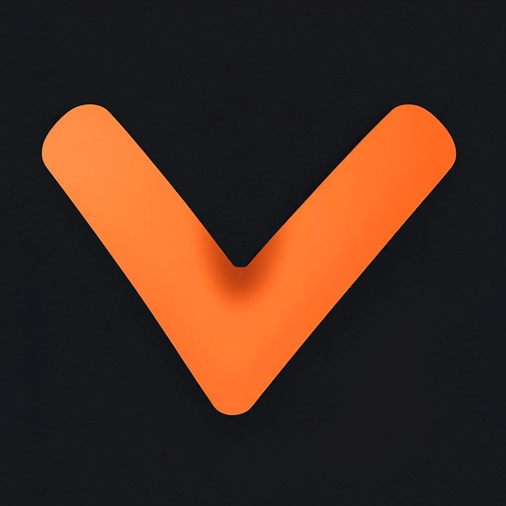

The Warp9 logo features a minimalist chevron design representing forward momentum and speed, characteristic of our terminal application's performance.
With its charcoal background and amber orange accent, the logo embodies the power and efficiency of Warp9 for developers and command-line enthusiasts.